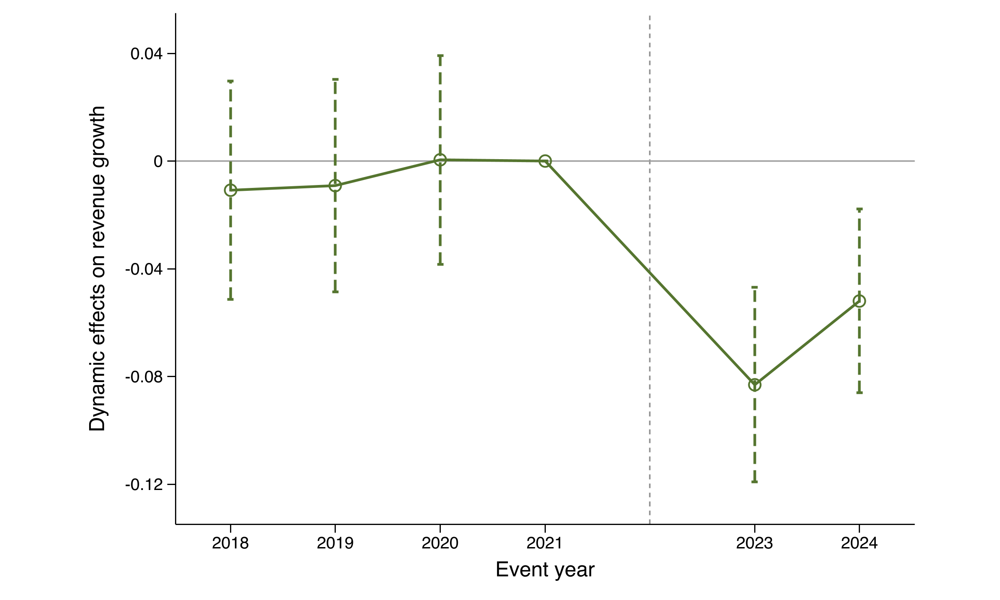
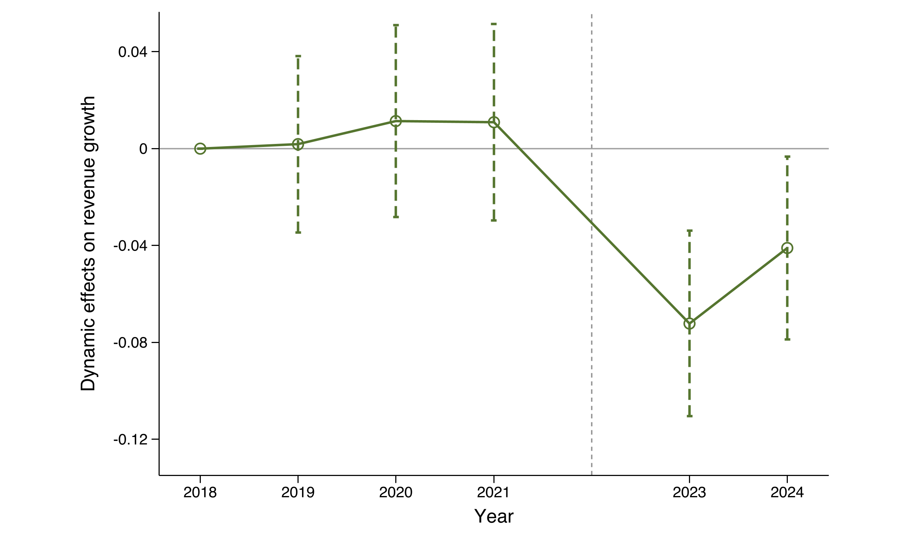
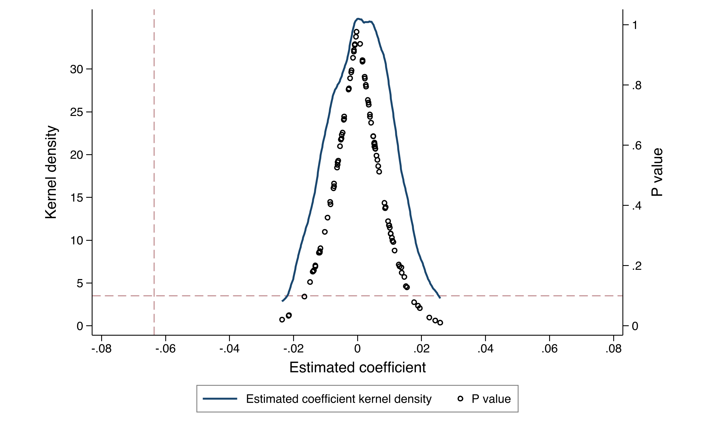
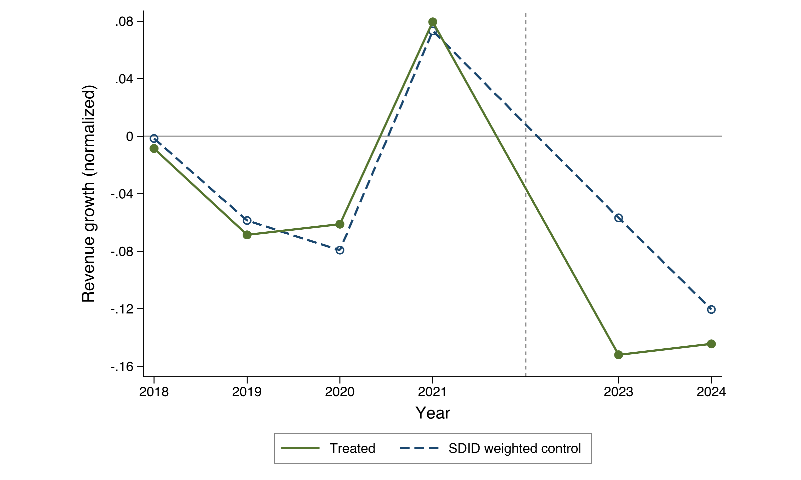
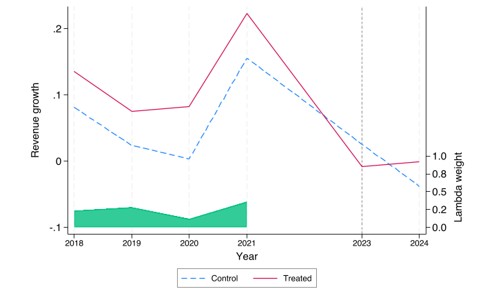

出口管制冲击与企业适应性增长——来自中国上市公司的证据
本文尚未完成。
摘要
2022 年 10 月 7 日，美国对华先进芯片、半导体设备及相关技术服务实施新一轮出口管制。本文利用这一外生冲击，考察外部技术约束加剧后中国上市公司的增长表现及其韧性来源。基于 2018—2024 年上市公司年报文本、海关贸易、财务报表、供应链披露和专利布局数据，本文将企业冲击前年报文本暴露转换为非负分位数，构造企业层面的预冲击暴露度，并将省份半导体进口依赖作为地区供应链环境的异质性维度。识别上，本文以文本暴露度最高 25% 企业为处理组、文本暴露度最低且并列的一组企业为对照组，采用双重差分模型作为基准估计，并以合成双重差分作为稳健性检验。结果显示，出口管制后高暴露企业的营业收入增长率相对于低暴露企业下降约 6.4 个百分点，动态效应检验未显示冲击前系统性差异。该结果在 SDID 下仍显著为负，协变量调整后系数变化较小。机制检验表明，冲击前组织产能基础和供应链韧性较强的高暴露企业销售端下滑较小，冲击前技术基础较强的高暴露企业更可能维持收入继续增长并缓冲利润下滑。本文的核心结论不是出口管制导致企业全面收缩，而是高暴露企业的收入增长动能受到显著压制，但企业既有能力基础会显著影响其冲击后的增长韧性。
关键词： 出口管制；企业增长韧性；双重差分；供应链韧性；技术基础
一、引言
半导体及其相关设备、材料和软件已经成为大国科技竞争中最集中的政策工具。2022 年 10 月 7 日，美国商务部出台新一轮对华出口管制规则，对先进制程芯片、晶圆制造设备、高性能计算芯片以及美国人员参与的在华半导体服务活动施加更严格限制。与一般贸易摩擦相比，该政策更集中地约束关键技术路径和产业链瓶颈环节，因而不仅改变企业的外部供给条件，也可能改变企业对未来增长边界、组织资源配置和技术路线选择的判断。
已有研究通常从创新数量、进口替代、供应商进入或生产率变化等总量结果出发评估技术限制的经济后果。这类研究较好地捕捉了冲击对企业产出和创新的平均影响，但较少触及企业决策者关心的两个问题：关键技术受限后，企业是否仍能维持增长；若能，韧性来自企业冲击后的临时调整，还是来自冲击前已经形成的组织、供应链和技术能力基础。尤其在年度数据中，冲击后的现金、库存和技术布局本身可能受到出口管制影响，若直接作为机制交互变量，容易引入后处理变量和坏控制问题。因此，本文将机制检验的重点前移到冲击前已确定的能力基础。
本文以“增长韧性”而非单纯“行为变化”为分析重心，将出口管制后的企业差异解释聚焦于三类事前能力基础：组织产能基础、供应链韧性和技术基础。组织产能基础反映企业在固定资产、管理投入和无形资产上的既有承载能力；供应链韧性反映企业在冲击前是否拥有更分散的供应商、更稳定的上市客户联系以及同业供应商联盟；技术基础反映企业在半导体相关专利和无形资产上的既有积累。核心问题在于，这些冲击前已经形成的能力条件能否帮助高暴露企业在出口管制后维持销售、延续收入增长并缓冲利润压力。
本文整合 2018—2024 年上市公司年报文本、海关依赖、财务指标、供应链披露与细分专利信息，通过企业层面文本暴露度识别高低暴露企业，并在企业固定效应和行业-年份固定效应下估计高低暴露组双重差分模型。基准结果表明，出口管制后高暴露企业的营业收入增长率显著下降，但这一负向变化并未在所有增长口径上同步出现。机制层面，组织产能基础和供应链韧性主要解释销售端韧性，技术基础主要解释收入继续增长和利润韧性。
本文的边际贡献体现在三方面。第一，本文将出口管制研究从“企业是否改变行为”推进到“企业能否维持增长”，使文本、经营、供应链与专利数据共同服务于经济后果解释。第二，本文将机制检验前移到冲击前能力基础，避免将处理后的现金、库存和技术布局直接作为核心机制变量，从而使机制解释更符合微观实证研究对后处理偏误的要求。第三，本文在普通 DID 基准之外使用 SDID、协变量调整 SDID、随机安慰剂和暴露度有效性检验，显示核心收入增长结果并非完全由普通 DID 的处理前差异或文本测度噪声驱动。
二、制度背景与研究假说
2022 年 10 月 7 日美国出口管制规则直接提高了中国企业获取先进芯片、核心设备、关键材料和相关技术服务的难度。半导体链条高度分工，技术互补性强，关键环节受限可能通过供应不确定性、交付周期延长和扩产预期调整等渠道影响企业经营。该冲击兼具全国共同性和企业异质性：前者源于政策时点与外部环境变化，后者根植于各企业冲击前的进口依赖、地区贸易结构、产业链位置和技术基础。需要指出，企业文本暴露度构造窗口为 2018—2021 年，省份半导体进口依赖构造窗口为 2019—2021 年，二者均与 COVID-19 疫情存在重合，因此高暴露企业可能同时是更受全球供应链扰动影响的企业。本文通过动态效应检验和 SDID 稳健性检验缓解这一担忧，但不能完全排除疫情与管制效应叠加。
理论上，出口管制应首先压制短期收入增长。外部技术供给受限会冲击生产连续性和交付能力，直接拉低营业收入增长率。而收入规模、继续增长概率和利润增长等口径还受到既有合同、资产结构、成本传导和财务确认节奏影响，未必在同一年内同步变化。由此，本文提出假说 1：出口管制对高暴露企业的负面效应主要体现在营业收入增长率等经营流量指标上，而其他增长和利润口径的效应较弱或方向不稳定。
面对外部冲击，企业能否维持销售首先取决于冲击前是否具备足够的组织承载和供应链协调能力。固定资产、管理投入和无形资产较充足的企业，通常更容易在关键投入受限时维持生产组织、项目交付和客户响应；供应商更分散、客户联系更稳定、同业供应商联盟更充分的企业，则更可能在采购替代和订单协调中获得缓冲。据此提出假说 2：冲击前组织产能基础和供应链韧性较强的高暴露企业，在出口管制后销售端下滑更小。
技术基础决定企业能否将外部约束转化为产品替代、工艺调整和利润保护。相较于冲击后新增研发投入，冲击前已经形成的半导体相关专利存量和无形资产更能代表企业可立即调用的技术资源。这类技术基础未必直接提高当期营业收入增长率，但可能提高收入继续增长概率，并通过降低调整成本、改善产品结构或增强议价能力缓冲利润下滑。据此提出假说 3：冲击前技术基础较强的高暴露企业，在出口管制后更可能维持收入继续增长并表现出更强利润韧性。
三、数据、变量与识别策略
（一）数据与样本
本文整合五类核心微观数据。第一，上市公司年报文本数据来自巨潮资讯网 2018—2024 年全部 A 股上市公司年报，经 PDF 解析后用于度量企业在技术依赖、芯片关注和供应风险方面的表述强度。第二，海关贸易数据来自中国海关总署月度进出口统计，用于刻画冲击前各省份对关键来源地和关键品类的半导体进口依赖。关键品类包括 HS8541 二极管及半导体器件、HS8542 集成电路；关键来源地包括美国、日本、韩国、中国台湾、中国香港、德国、新加坡、马来西亚、越南、泰国、菲律宾和印度尼西亚。第三，上市公司财务报表数据来自 CSMAR，用于构造营业收入、资产、营业利润、净利润和事前组织产能基础。第四，上市公司供应链披露数据来自 CSMAR 前五大供应商、前五大客户和供应链联盟表，用于构造冲击前供应链韧性。第五，专利数据来自国家知识产权局，用于识别企业在半导体相关方向上的事前技术基础。为检验暴露度测度是否具有客观供应链基础，第六节进一步使用 2014—2016 年企业级海关交易记录和上市公司子公司工商注册数据，将上市公司母公司、控股子公司及其曾用名匹配到海关经营单位，构造集团层面的历史半导体进口暴露度。
本文将上述数据在企业-年份层面匹配，构造 2018—2024 年非平衡面板。核心分析面板包含 31,936 个公司-年份观测和 5,600 家公司。样本筛选步骤为剔除金融行业和房地产行业公司，保留至少连续两年有观测值的公司-年份组合，并在各回归中剔除关键变量缺失观测。最终描述性统计主样本包含 28,961 个公司-年份观测和 4,742 家公司。
（二）核心变量
本文利用 2022 年 10 月 7 日美国对华出口管制政策作为外生冲击。令 表示 2023 年及以后时期，政策出台年 2022 年剔除出回归样本。为避免标准化文本变量带来的负暴露度解释问题，本文将企业冲击前年报文本暴露转换为样本内平均秩分位数 ，并以此作为企业层面的核心预冲击暴露度：
其中 来自企业冲击前年报中“技术依赖”和“芯片关注”两类关键词标准化词频的等权平均，并按样本平均秩转换为非负分位数。使用平均秩的原因在于，大量企业在冲击前具有完全相同的最低文本暴露值，若使用唯一秩会将这些并列企业任意拆分到不同分位位置。 为 2019—2021 年各省份从关键来源地进口 HS8541 和 HS8542 的份额均值，本文不再将其机械乘入主暴露度，而是将其作为地区供应链环境，在异质性检验中考察其是否放大企业层面文本暴露的冲击效应。
本文将 最高 25% 企业定义为高暴露组，将冲击前文本暴露处于样本最低值且并列的企业定义为低暴露组，中间企业不进入主估计。这样的分组避免了在最低文本暴露大量并列时将相同暴露企业人为拆分。处理变量定义为：
结果变量包括营业收入增长率、营业收入规模、收入继续增加概率、营业利润增长和净利润增长。营业收入增长率定义为 并经 1% 和 99% 分位数缩尾；其中 2018 年增长率使用 2017 年营业收入作为基期，但 2017 年不进入回归样本。营业收入规模为 ，收入继续增加为当年营业收入高于上一年的虚拟变量。营业利润增长和净利润增长均以反双曲正弦变换后的差值度量。
机制变量均使用 2018—2021 年冲击前信息构造，并在企业层面标准化。事前组织产能基础定义为：
其中 为冲击前固定资产占总资产比例均值， 为管理费用占营业收入比例均值， 为无形资产占总资产比例均值。事前供应链韧性定义为：
其中 为第一大供应商采购占比的相反数，数值越高表示供应商越分散； 表示冲击前是否披露上市公司客户联系； 表示冲击前同业供应商联盟比例。事前技术基础定义为：
其中 、 和 分别为冲击前半导体相关广义专利、核心专利和广义实用新型专利存量。由于三类机制变量均在冲击前确定，正文机制检验不再使用处理后的库存、现金或当期技术布局作为核心交互变量。
表 1 报告主要变量描述性统计。所有统计基于主样本并剔除 2022 年观测值。
表 1 主要变量描述性统计
| 变量 | 观测值 | 均值 | 标准差 | P25 | P50 | P75 |
|---|---|---|---|---|---|---|
| 23,690 | 0.496 | 0.280 | 0.175 | 0.495 | 0.742 | |
| 省份进口依赖 | 24,306 | 0.848 | 0.076 | 0.813 | 0.880 | 0.889 |
| 高暴露组 | 14,007 | 0.408 | 0.492 | 0.000 | 0.000 | 1.000 |
| 低暴露组 | 14,007 | 0.592 | 0.492 | 0.000 | 1.000 | 1.000 |
| 营业收入增长率 | 23,109 | 0.060 | 0.293 | -0.064 | 0.067 | 0.196 |
| asinh 营收增长 | 15,172 | 0.064 | 0.296 | -0.063 | 0.070 | 0.204 |
| ln(营业收入) | 24,301 | 21.551 | 1.514 | 20.511 | 21.392 | 22.400 |
| 收入继续增加 | 23,115 | 0.650 | 0.477 | 0.000 | 1.000 | 1.000 |
| 营业利润增长 | 23,120 | -1.336 | 15.515 | -0.500 | 0.051 | 0.392 |
| 净利润增长 | 23,120 | -1.418 | 15.681 | -0.515 | 0.051 | 0.387 |
| 事前组织产能基础 | 23,696 | 0.021 | 0.907 | -0.602 | -0.107 | 0.469 |
| 事前供应链韧性 | 22,435 | 0.014 | 0.961 | -0.268 | -0.057 | 0.365 |
| 事前技术基础 | 23,690 | 0.020 | 1.088 | -0.221 | -0.103 | 0.062 |
| ln(总资产) | 24,306 | 22.294 | 1.317 | 21.361 | 22.076 | 23.006 |
| 研发强度 | 24,303 | 0.005 | 0.020 | 0.000 | 0.000 | 0.000 |
| 库存率 | 24,306 | 0.124 | 0.110 | 0.051 | 0.102 | 0.164 |
| 现金率 | 24,306 | 0.182 | 0.130 | 0.090 | 0.148 | 0.239 |
| 无形资产率 | 24,306 | 0.044 | 0.049 | 0.016 | 0.031 | 0.053 |
| 杠杆率 | 24,306 | 0.419 | 0.209 | 0.252 | 0.408 | 0.565 |
| ROA | 24,306 | 0.030 | 0.081 | 0.008 | 0.035 | 0.069 |
注：高暴露组和低暴露组变量仅在文本暴露最高 25% 企业与最低并列值企业构成的高低暴露估计样本中定义；其余变量基于主样本非缺失观测统计。
（三）识别模型
本文的基准识别采用高低暴露组双重差分模型：
其中 为企业 在年份 的结果变量， 为企业固定效应， 为行业-年份固定效应， 为处理变量， 包括企业规模、研发强度、库存率、现金率、无形资产率、杠杆率和 ROA。核心参数 衡量出口管制后高文本暴露企业相对于低文本暴露企业的变化。
机制检验采用同一 DID 框架下的事前能力调节模型：
其中 分别表示事前组织产能基础、事前供应链韧性和事前技术基础。由于 为企业层面的时间不变变量，其主效应被企业固定效应吸收，交互项 衡量冲击前能力基础是否缓解出口管制后的增长损失。该设定并不声称识别完整中介效应，而是检验事前能力差异是否构成增长韧性的条件来源。
四、基准回归结果
表 2 以营业收入增长率作为核心被解释变量，报告普通 DID 的逐步规格。第（1）列仅吸收企业固定效应和年份固定效应，第（2）列进一步加入企业层面控制变量，第（3）列将年份固定效应替换为行业-年份固定效应，第（4）列在行业-年份固定效应基础上加入控制变量，也是本文后续分析采用的主规格。四个规格中， 的估计系数均显著为负，幅度介于 与 之间。主规格下，出口管制后高文本暴露企业的营业收入增长率相对于低文本暴露企业下降约 6.4 个百分点，企业聚类和省级聚类推断均在 1% 水平上显著。这说明本文的核心结果不是由某一组控制变量或固定效应设定机械驱动。
表 2 普通 DID 基准结果：营业收入增长率
| (1) | (2) | (3) | (4) | |
|---|---|---|---|---|
| -0.0587*** | -0.0640*** | -0.0605*** | -0.0636*** | |
| (0.0112) | (0.0103) | (0.0132) | (0.0120) | |
| 企业固定效应 | 是 | 是 | 是 | 是 |
| 年份固定效应 | 是 | 是 | 否 | 否 |
| 行业-年份固定效应 | 否 | 否 | 是 | 是 |
| 控制变量 | 否 | 是 | 否 | 是 |
| 观测值 | 13,225 | 13,225 | 13,196 | 13,196 |
| 0.260 | 0.354 | 0.347 | 0.423 |
注：括号内为企业聚类标准误。样本为文本暴露度最高 25% 企业与文本暴露处于最低并列值的企业，2022 年剔除。控制变量包括企业规模、研发强度、库存率、现金率、无形资产率、杠杆率和 ROA。显著性星号依据企业聚类标准误计算。
作为补充结果，使用第（4）列同一主规格估计其他增长口径时，收入继续增加概率下降约 4.3 个百分点，并在 5% 水平上显著；营业收入规模不显著；营业利润增长和净利润增长在普通 DID 下为正。这些结果说明，基准证据并不支持“高暴露企业全面衰退”的解释。本文因此将核心经济含义限定为收入增长动能下降，而非规模和利润的同步收缩。动态效应和平行趋势检验属于识别有效性问题，本文将其与省份趋势、暴露度替代构造和 SDID 加权趋势一并放在第六节讨论。
五、事前能力基础与增长韧性机制
本节围绕第二个研究问题展开：在出口管制冲击下，哪些事前能力基础帮助企业维持增长。与使用冲击后现金、库存或当期技术布局作为机制变量不同，本文将机制变量全部限定为 2018—2021 年冲击前已经形成的企业特征。这样处理的好处是，机制变量不会被 2022 年出口管制本身反向影响，因而能够更清楚地检验“哪些既有能力使高暴露企业更有韧性”。下文依次考察销售端韧性、收入规模支撑和利润韧性。
（一）组织产能基础、供应链韧性与销售端维持
表 3 报告三类事前能力基础对营业收入增长率和收入继续增加概率的调节效应。第（1）至第（3）列以营业收入增长率为被解释变量。事前组织产能基础与处理变量的交互项显著为正，系数为 0.0381；事前供应链韧性交互项也显著为正，系数为 0.0252；事前技术基础对营业收入增长率为正但不显著。该结果说明，在受到出口管制冲击后，更强的组织承载能力和供应链协调能力主要帮助企业缓和销售增长率的下降，而技术基础并不直接体现为当期收入增速改善。
第（4）至第（6）列以收入继续增加概率为被解释变量。组织产能基础仍显著为正，技术基础也显著为正，而供应链韧性的系数为正但不显著。结合前两组结果看，销售端韧性具有分层特征：组织产能基础同时对应收入增长率和继续增长概率，供应链韧性主要对应收入增长率的短期缓冲，技术基础则更接近于帮助企业避免收入转为下降。
表 3 事前能力基础与销售端韧性
| 营收增长率 | 营收增长率 | 营收增长率 | 收入继续增加 | 收入继续增加 | 收入继续增加 | |
|---|---|---|---|---|---|---|
| 0.0381*** | 0.0495*** | |||||
| (0.0111) | (0.0173) | |||||
| 0.0252*** | 0.0157 | |||||
| (0.0083) | (0.0157) | |||||
| 0.0032 | 0.0080*** | |||||
| (0.0022) | (0.0030) | |||||
| 观测值 | 13,196 | 12,470 | 13,196 | 13,201 | 12,475 | 13,201 |
| 0.424 | 0.430 | 0.423 | 0.407 | 0.407 | 0.407 |
注：括号内为企业聚类标准误。所有列吸收企业 FE 和行业-年份 FE，并控制企业规模、研发强度、库存率、现金率、无形资产率、杠杆率和 ROA。显著性星号依据企业聚类标准误计算。
（二）组织产能基础与收入规模支撑
表 4 进一步以营业收入规模为被解释变量，考察三类事前能力基础是否对应更强的规模支撑。组织产能基础的交互项为 0.0891，并在 1% 水平上显著；技术基础的交互项为 0.0106，也在 1% 水平上显著；供应链韧性交互项不显著。该结果表明，出口管制后高暴露企业能否维持收入规模，更依赖企业冲击前已经形成的组织承载能力和技术资源，而不是单纯依赖披露层面的供应链关系。与表 3 的营业收入增长率结果相比，组织产能基础在销售端的解释力最为稳定，技术基础则更多体现为规模维持和继续增长，而非当期增速修复。
表 4 事前能力基础与收入规模
| 营收规模 | 营收规模 | 营收规模 | |
|---|---|---|---|
| 0.0891*** | |||
| (0.0329) | |||
| -0.0047 | |||
| (0.0122) | |||
| 0.0106*** | |||
| (0.0036) | |||
| 观测值 | 13,967 | 13,234 | 13,967 |
| 0.968 | 0.970 | 0.968 |
注：括号内为企业聚类标准误。所有列吸收企业 FE 和行业-年份 FE，控制变量同表 3。
（三）技术基础与利润韧性
表 5 将被解释变量转换为营业利润增长和净利润增长，检验事前技术基础是否具有利润保护作用。结果显示， 对营业利润增长的系数为 0.2776，对净利润增长的系数为 0.2689，二者均在 1% 水平上显著。组织产能基础和供应链韧性在利润口径下不具有稳定正向作用。由此可见，技术基础的作用并不主要体现为提高当期营业收入增长率，而是通过收入继续增长、规模维持和利润缓冲体现出来。这与高技术企业面对外部技术约束时的调整逻辑相一致：既有技术积累降低替代和适配成本，使企业在收入增速承压时仍能保持较强的盈利韧性。
表 5 事前技术基础与利润韧性
| 营业利润增长 | 营业利润增长 | 营业利润增长 | 净利润增长 | 净利润增长 | 净利润增长 | |
|---|---|---|---|---|---|---|
| -0.8557* | -0.7292 | |||||
| (0.5195) | (0.5144) | |||||
| -0.4103 | -0.1689 | |||||
| (0.4204) | (0.4298) | |||||
| 0.2776*** | 0.2689*** | |||||
| (0.0983) | (0.0934) | |||||
| 观测值 | 13,205 | 12,479 | 13,205 | 13,205 | 12,479 | 13,205 |
| 0.315 | 0.320 | 0.315 | 0.334 | 0.337 | 0.334 |
注：括号内为企业聚类标准误。所有列吸收企业 FE 和行业-年份 FE，控制变量同表 3。
六、稳健性与识别有效性检验
本节将稳健性检验与识别有效性检验区分展开。稳健性检验主要回答基准结论是否依赖普通 DID 的估计方式、是否依赖特定高低暴露分组以及是否受特殊样本驱动；识别有效性检验则重点考察高低文本暴露组在冲击前是否具有可比趋势，结果是否受省份层面冲击或随机分组关系影响。暴露度有效性则从两个方向单独验证：一是历史真实进口是否能够解释当前文本暴露度，二是当前暴露度是否能够预测出口管制公告后的资本市场短窗口反应。
（一）模型稳健性：合成双重差分与协变量调整
本文考虑到高低暴露企业在处理前可能存在结构差异，本文进一步采用合成双重差分作为稳健性检验， 检验核心 DID 结论是否依赖普通 DID 的组间可比性假设。SDID 同时选择企业权重和时间权重，使处理前加权对照组更接近处理组。记处理组企业集合为 ，对照组企业集合为 ，处理前年份集合为 ，处理后年份集合为 。SDID 估计量可写为：
其中 为对照组企业权重， 为处理前时期权重，二者由处理前结果序列选择，使加权对照组尽可能贴近处理组。直观上，SDID 先比较处理后处理组与加权对照组的平均差异，再扣除处理前由 加权得到的平均差异； 改善处理组与对照组的企业构成可比性， 则强调更有助于拟合处理组处理前走势的年份。由于 SDID 不直接估计连续机制变量的调节效应，机制部分仍以 DID 交互模型为主，并以 SDID 权重加权 WLS 作为补充。
表 6 显示，将 2018 年纳入处理前窗口后，营业收入增长率的 SDID ATT 为 ，与普通 DID 基准结果方向一致且高度显著。收入继续增加不显著，利润增长在 SDID 下仅呈弱显著或不显著，提示利润口径对估计方法更敏感。由此可见，SDID 稳定支持核心收入增长结论，但对规模和利润口径的解释仍需保持谨慎。
表 6 SDID 稳健性检验
| 营业收入增长率 | 营业收入规模 | 收入继续增加 | 营业利润增长 | 净利润增长 | |
|---|---|---|---|---|---|
| DID ATT | -0.0656*** | 0.1739*** | -0.0326 | -0.8929* | -0.9500* |
| SDID ATT | -0.0595*** | 0.0382* | -0.0307 | -0.8027 | -0.9072* |
| SDID SE | 0.0117 | 0.0231 | 0.0259 | 0.4915 | 0.4979 |
| SDID | 0.000 | 0.099 | 0.236 | 0.102 | 0.068 |
| 观测值 | 10,338 | 10,608 | 10,344 | 10,350 | 10,350 |
注：SDID 样本为 2018、2019、2020、2021、2023 和 2024 年均有观测的平衡面板，标准误基于 100 次企业层面 bootstrap。该表中的 DID ATT 来自 sdid 命令的无协变量 DID，对应稳健性对照，不同于表 2 的控制变量 DID。
进一步地，本文在 SDID 中加入协变量调整。表 7 显示，营业收入增长率在无控制、optimized 协变量调整和 projected 协变量调整三种口径下分别为 、 和 ，幅度变化较小。相比之下，收入规模和利润口径对协变量调整较敏感，进一步说明营业收入增长率是当前证据中最稳健的核心结果。
表 7 协变量调整 SDID 对照
| 营业收入增长率 | 营业收入规模 | 收入继续增加 | 营业利润增长 | 净利润增长 | |
|---|---|---|---|---|---|
| 无协变量 SDID | -0.0595 | 0.0382 | -0.0307 | -0.8275 | -0.9295 |
| Optimized | -0.0591 | 0.0258 | -0.0224 | -0.0878 | -0.1562 |
| Projected | -0.0649 | -0.0176 | -0.0273 | 0.5479 | 0.4761 |
| 观测值 | 10,338 | 10,608 | 10,344 | 10,344 | 10,344 |
注：协变量包括企业规模、研发强度、库存率、现金率、无形资产率、杠杆率和 ROA。本表用于比较 ATT 幅度，未报告 bootstrap 推断。
（二）识别有效性：平行趋势、地区冲击与安慰剂检验
平行趋势是本文高低文本暴露组 DID 识别的核心前提。为检验平行趋势，本文估计如下动态模型：
其中 2021 年为基准年，、 和 用于检验处理前趋势差异， 和 刻画冲击后的动态变化。本文按企业聚类标准误，并补充报告省级聚类标准误。
表 8 首先报告营业收入增长率的动态 DID 结果。2018 年、2019 年和 2020 年的处理前交互项分别为 、 和 ，均远未达到显著水平，联合预趋势检验 ；冲击后，2023 年系数为 ，2024 年系数为 ，均显著为负。图 1 以 2021 年为基准年展示动态系数及其置信区间，处理前估计值围绕 0 波动，处理后系数转为负值，与表 8 的回归结果一致。本文也画了以 2018 年为基期的事件研究图作为补充，结果一致。


表 8 识别有效性检验：营业收入增长率
| 检验或规格 | 系数 | 企业聚类标准误 | 企业 | 省级 | 观测值 |
|---|---|---|---|---|---|
| 动态 DID：2018 年 | -0.0109 | 0.0207 | 0.600 | 0.530 | 13,196 |
| 动态 DID：2019 年 | -0.0091 | 0.0201 | 0.650 | 0.674 | 13,196 |
| 动态 DID：2020 年 | 0.0004 | 0.0198 | 0.983 | 0.984 | 13,196 |
| 动态 DID：2023 年 | -0.0831*** | 0.0184 | 0.000 | 0.000 | 13,196 |
| 动态 DID：2024 年 | -0.0519*** | 0.0174 | 0.003 | 0.000 | 13,196 |
| 冲击前伪处理 | -0.0009 | 0.0151 | 0.953 | 0.948 | 7,777 |
| 省份线性趋势 | -0.0626*** | 0.0121 | 0.000 | 0.000 | 13,196 |
| 省份-年份固定效应 | -0.0612*** | 0.0121 | 0.000 | 0.000 | 13,196 |
| 城市-年份固定效应 | -0.0591*** | 0.0128 | 0.000 | 0.000 | 12,742 |
| 控制长三角/珠三角 | -0.0621*** | 0.0121 | 0.000 | 0.000 | 13,196 |
| 剔除长三角/珠三角 | -0.0792*** | 0.0203 | 0.000 | 0.000 | 6,371 |
| 剔除暴露度上下 1% | -0.0635*** | 0.0120 | 0.000 | 0.000 | 13,095 |
| 原乘积暴露度高低组 | -0.0558*** | 0.0129 | 0.000 | 0.000 | 11,039 |
| 原乘积暴露度 + 省份-年份固定效应 | -0.0582*** | 0.0143 | 0.000 | 0.000 | 11,039 |
注：动态 DID 以 2021 年为基准年，联合预趋势检验 。冲击前伪处理使用 2019—2021 年样本，并将 2020 年及以后设为伪冲击期。原乘积暴露度为 ，作为替代构造列示。除伪处理外，所有规格均使用 2018—2024 年且剔除 2022 年的样本。所有列均控制企业规模、研发强度、库存率、现金率、无形资产率、杠杆率和 ROA，并吸收企业 FE 与行业-年份 FE；省份-年份固定效应和城市-年份固定效应规格分别额外吸收相应地区-年份固定效应。长三角/珠三角定义为上海、江苏、浙江、安徽和广东。显著性星号依据企业聚类标准误计算。
表 8 的其余行进一步检验识别结果是否由其他因素驱动。冲击前伪处理项接近 0 且不显著，说明高低文本暴露组在 2019—2021 年没有表现出可检测的差异化变化。考虑到出口管制时点与 2022 年底疫情管控调整高度接近，且高技术产业链企业可能集中在长三角和珠三角，本文进一步控制地区层面的同期冲击。加入省份线性趋势、吸收省份-年份固定效应和城市-年份固定效应后，核心系数仍显著为负；直接控制长三角/珠三角 后系数为 ，剔除长三角和珠三角后系数为 。这些结果说明，本文的收入增长率下降并不完全由重点地区疫情扰动或区域性恢复差异驱动。剔除暴露度上下 1% 极端企业后，结果仍保持稳定；将原乘积暴露度作为替代构造时，营业收入增长率仍显著为负，说明主结论并不依赖于是否将省份进口依赖机械乘入企业暴露度。
进一步地，本文在高低暴露组样本内随机打乱处理组身份，并重复估计基准 DID 100 次，构造随机安慰剂分布。图 3 显示，随机分组得到的系数主要集中在 0 附近，范围约为 ，没有一次随机系数达到真实估计值 的绝对幅度，对应经验双侧 。这说明基准结果不太可能由高低暴露组样本中的随机分组关系机械产生。

图 4 展示 SDID 口径下处理组与加权对照组的营业收入增长率趋势。为避免固定水平差影响可视化，图中两条折线均按各自处理前加权均值归一化。SDID 通过企业权重和时间权重提高处理前趋势的可比性，图中处理前两组走势较为接近，处理后处理组相对于加权对照组下降。这一图形证据与表 6 中营业收入增长率的 SDID ATT 相互印证。本文也画了 sdid 自带命令 graph 所绘制的图，作为补充。


（三）替代分组与样本边界稳健性
除主估计采用“最高 25% 文本暴露企业相对于最低并列文本暴露企业”的分组方式外，本文进一步检验结果是否依赖该分组口径。表 9 显示，将高暴露组阈值分别改为最高 20%、25% 和 30%，核心系数仍稳定为负。考虑到低文本暴露企业存在大量并列最低值，本文还使用严格分位排序重新构造低暴露组，以避免对照组完全由最低并列值企业组成；严格最高 20%、25% 和 30% 口径下，系数同样显著为负，且幅度并未减弱。连续文本暴露度与冲击后虚拟变量的交互项也显著为负，说明结果并非完全来自尾部分组设定。
表 9 还排除了两个可能影响解释的样本边界。第一，剔除半导体相关行业后，营业收入增长率系数仍为 ，说明本文结果不只是半导体行业内部冲击的反映。第二，剔除疫情敏感行业后，系数仍为 ，表明核心结论不完全由疫情后需求恢复或供应链扰动较强的行业驱动。总体而言，替代分组、连续暴露和样本剔除检验均支持高文本暴露企业在出口管制后收入增长率下降这一基准发现。
表 9 替代分组与样本边界稳健性：营业收入增长率
| 规格 | 系数 | 企业聚类标准误 | 企业 | 省级 | 观测值 |
|---|---|---|---|---|---|
| 最高 20% vs 最低 20% | -0.0648*** | 0.0148 | 0.000 | 0.000 | 12,637 |
| 最高 25% vs 最低 25% | -0.0606*** | 0.0132 | 0.000 | 0.000 | 13,807 |
| 最高 30% vs 最低 30% | -0.0558*** | 0.0122 | 0.000 | 0.000 | 14,983 |
| 严格最高 20% vs 严格最低 20% | -0.0754*** | 0.0163 | 0.000 | 0.000 | 9,365 |
| 严格最高 25% vs 严格最低 25% | -0.0770*** | 0.0146 | 0.000 | 0.000 | 11,799 |
| 严格最高 30% vs 严格最低 30% | -0.0629*** | 0.0126 | 0.000 | 0.000 | 14,152 |
| 连续文本暴露度 | -0.0785*** | 0.0152 | 0.000 | 0.000 | 22,457 |
| 剔除半导体相关行业 | -0.0638*** | 0.0169 | 0.000 | 0.000 | 8,940 |
| 剔除疫情敏感行业 | -0.0530*** | 0.0136 | 0.000 | 0.000 | 12,390 |
注：被解释变量均为营业收入增长率。前三行使用文本暴露度平均秩分位数直接划分高低组；“严格”分组使用排序分位强制构造相应比例的高低暴露组，以处理低暴露端大量并列最低值问题；连续规格使用 。半导体相关行业和疫情敏感行业剔除规格均以主分组为基础。所有规格均吸收企业 FE 和行业-年份 FE，控制变量同表 2，显著性星号依据企业聚类标准误计算。
（四）暴露度有效性：历史真实进口与资本市场短窗口反应
本文的核心暴露度来自企业年报文本，因而需要说明该指标并非单纯反映披露风格。为此，本文从“真实供应链基础”和“市场冲击定价”两个方向进行验证。第一，若 有效刻画企业潜在技术供应链暴露，则冲击前更依赖半导体进口的企业集团应当具有更高的当前文本暴露度。第二，若该暴露度确实捕捉出口管制风险，则在政策公告后，高文本暴露企业应出现更低的短窗口累积异常收益。
表 10 的 Panel A 使用 2014—2016 年企业级海关交易记录和上市公司子公司工商注册数据进行检验。本文将上市公司母公司、控股子公司、工商匹配企业名称及曾用名与海关经营单位名称匹配，构造集团层面的历史半导体进口占比和进口规模。结果显示，集团历史半导体进口变量能够显著解释当前文本暴露度。集团半导体进口占比和 均显著为正；关键来源地半导体进口版本也得到同样结论。该结果表明，当前文本暴露度确实包含可由企业集团真实半导体进口行为解释的客观成分。
表 10 的 Panel B 进一步报告资本市场事件研究。本文以 2022 年 10 月 10 日，即国庆假期后 A 股首个交易日为事件日，比较高文本暴露组与低文本暴露组的市场调整累积异常收益。高文本暴露组在 和 窗口分别低约 1.28 和 0.78 个百分点，均显著为负；较长窗口不再显著，说明市场主要在短窗口内对出口管制风险进行重新定价，而不应将事件研究解释为长期股价效应。
表 10 暴露度有效性检验：历史真实进口与资本市场反应
Panel A：集团历史真实进口对当前暴露度的解释
| (1) | (2) | |
|---|---|---|
| 集团半导体进口占比 | 0.1211*** | |
| (0.0290) | ||
| 0.0115*** | ||
| (0.0011) | ||
| 集团关键来源地半导体进口占比 | 0.1260** | |
| (0.0553) | ||
| 0.0128*** | ||
| (0.0011) | ||
| 观测值 | 2,808 | 2,808 |
| 0.092 | 0.074 |
Panel B：高低暴露组的资本市场事件研究
| 高暴露组 | -0.0128*** | -0.0078*** | -0.0019 | 0.0021 |
| (0.0024) | (0.0020) | (0.0025) | (0.0028) | |
| 值 | 0.000 | 0.000 | 0.441 | 0.461 |
| 观测值 | 2,103 | 2,104 | 2,103 | 2,102 |
注：Panel A 为企业层面横截面回归，样本为可匹配集团历史海关进口记录且可构造当前文本暴露度的企业，括号内为异方差稳健标准误。集团半导体进口基于 2014—2016 年海关交易记录，匹配对象包括上市公司母公司、直接或间接持股合计不低于 50% 的国内子公司、工商匹配企业名称及曾用名。Panel B 的因变量为市场调整累积异常收益，回归控制 ln(市值)、杠杆率和 ROA，并吸收行业固定效应，样本限制为当前高低文本暴露组中有事件窗口收益数据的上市公司。显著性星号分别表示 1%、5% 和 10% 水平。
需要强调，集团历史真实进口在本文中用于测度有效性检验，而不作为工具变量。原因在于，历史半导体进口不仅反映企业受管制技术依赖，也可能反映企业长期技术层级、全球采购能力、产业链位置和供应链管理能力，因而难以满足严格排除限制。本文使用它的目的，是验证当前暴露度是否具有真实供应链基础，而不是以其替代主识别变量。
（五）机制稳健性：固定效应、分组口径与 SDID 权重
为检验事前机制结果是否依赖特定估计口径，本文进一步围绕表 3 至表 5 中最核心的五个交互项进行稳健性检验。具体而言，本文依次加入省份-年份固定效应，使用严格最高 25% 与严格最低 25% 文本暴露分组，剔除疫情敏感行业，并使用 SDID 导出的企业权重和时间权重构造 权重进行 WLS 估计。由于三类机制变量均由 2018—2021 年信息构造，上述检验不会重新引入处理后机制变量。
表 11 显示，机制结果在不同口径下较为稳定。组织产能基础和供应链韧性对营业收入增长率的正向调节，在省份-年份固定效应、严格高低分组、剔除疫情敏感行业和 SDID 权重 WLS 下均保持显著。技术基础对收入继续增加、营业利润增长和净利润增长的调节效应也在所有稳健性规格中保持正向显著。由此可见，正文机制并非由单一固定效应设定、低暴露组并列值处理方式、疫情敏感行业或普通 DID 权重结构驱动。
表 11 机制稳健性检验
| 规格 | ，营收增长率 | ，营收增长率 | ，收入继续增加 | ，营业利润增长 | ，净利润增长 |
|---|---|---|---|---|---|
| 主规格 DID | 0.0381*** | 0.0252*** | 0.0080*** | 0.2776*** | 0.2689*** |
| (0.0111) | (0.0083) | (0.0030) | (0.0983) | (0.0934) | |
| 省份-年份固定效应 | 0.0372*** | 0.0223*** | 0.0086** | 0.2745*** | 0.2620*** |
| (0.0110) | (0.0084) | (0.0034) | (0.1019) | (0.0964) | |
| 严格高低 25% 分组 | 0.0420*** | 0.0250*** | 0.0081*** | 0.2780*** | 0.2699*** |
| (0.0114) | (0.0087) | (0.0031) | (0.1004) | (0.0959) | |
| 剔除疫情敏感行业 | 0.0360*** | 0.0238*** | 0.0080*** | 0.2746*** | 0.2637*** |
| (0.0115) | (0.0083) | (0.0031) | (0.0930) | (0.0880) | |
| SDID 权重 WLS | 0.0368*** | 0.0273*** | 0.0093*** | 0.2900*** | 0.2837*** |
| (0.0106) | (0.0080) | (0.0033) | (0.1031) | (0.1004) |
注：括号内为企业聚类标准误，显著性星号依据企业聚类推断计算。所有规格均吸收企业 FE 和行业-年份 FE，省份-年份固定效应规格额外吸收省份-年份 FE。严格高低 25% 分组使用排序分位强制构造最高 25% 与最低 25% 文本暴露组，以处理低暴露端大量并列最低值问题。SDID 权重 WLS 使用营业收入增长率 SDID 导出的企业权重和时间权重。完整企业聚类和省级聚类 值见 output/final_results/mechanism_predetermined_robustness.csv。
七、异质性与结果边界
表 12 报告当前文本暴露 DID 口径下的异质性结果。营业收入增长率的负向效应在半导体相关行业和非半导体相关行业均存在，但非半导体相关行业的系数更大。上游链条样本没有出现收入增长率下降，反而在收入规模上表现为正；非上游样本则表现出更强、更稳定的负向效应。进一步将省份进口依赖作为地区环境调节项时， 在三个收入口径下均不显著，说明省份进口依赖并不是企业文本暴露发挥作用的必要放大器。这一结果也支持本文将省份依赖从主暴露度中移出，而不是机械地与企业文本暴露相乘。
表 12 异质性与结果边界
| 样本 | 营收增长率 | 营收规模 | 收入继续增加 |
|---|---|---|---|
| 全样本 | -0.0636*** | -0.0283 | -0.0432** |
| 半导体相关行业 | -0.0528*** | 0.0358 | -0.0261 |
| 非半导体相关行业 | -0.0722*** | -0.0706*** | -0.0532** |
| 上游链条样本 | -0.0158 | 0.0686** | 0.0661 |
| 非上游样本 | -0.0784*** | -0.0586*** | -0.0776*** |
| -0.0015 | -0.0048 | 0.0446 |
注：前五行报告各样本中 的系数，最后一行报告全样本中 的系数。 表示企业所在省份冲击前半导体进口依赖高于样本中位数。所有规格均吸收企业 FE 和行业-年份 FE，控制变量同表 2，显著性星号依据企业聚类标准误计算。
异质性结果提示本文结论应保持清晰边界。核心结论是高文本暴露企业总体上收入增长率下降，而不是所有半导体相关企业均同步恶化。上游样本的正向收入规模结果可能反映国产替代、需求转移或产业链重估效应，这与机制部分“事前技术基础有助于维持收入规模和利润韧性”的解释并不矛盾。省份进口依赖调节项不显著则表明，企业自身文本暴露比地区平均进口环境更能刻画本文所关注的冲击异质性。
八、结论与政策启示
本文考察 2022 年 10 月美国对华出口管制冲击下中国上市公司的增长表现、适应性调整与增长韧性。为避免原始标准化暴露度出现负值并缓解解释困难，本文将企业冲击前年报文本暴露转换为非负分位数，并以此构造企业层面的预冲击暴露度。在文本暴露度最高 25% 企业与最低并列值企业的高低暴露组样本中，普通 DID 结果显示，出口管制后高暴露企业营业收入增长率相对下降约 6.4 个百分点，且动态检验未显示处理前系统性差异。SDID 和协变量调整 SDID 均支持这一核心结论。
机制结果表明，企业增长韧性主要来自冲击前已经形成的能力基础，而不是处理后行为变量的机械相关。组织产能基础和供应链韧性较强的高暴露企业，出口管制后的营业收入增长率下降更小；技术基础较强的高暴露企业，更可能维持收入继续增长，并在营业利润和净利润口径上表现出更强韧性。这说明，外部技术约束并不会对所有高暴露企业产生同质影响，企业的既有组织、供应链和技术条件会显著改变冲击后的增长路径。
本文的政策含义在于，面对技术封锁，企业增长韧性并不单纯依赖冲击后的短期补贴或临时库存调整。短期内，企业需要通过更稳定的组织承载能力和更具弹性的供应链关系降低交付和订单风险；中期则应关注可持续技术基础，尤其是围绕半导体关键环节形成可被实际调用的专利和无形资产积累。
本文也存在局限。第一，核心暴露度基于企业年报文本构造，虽然历史集团真实进口和公告期股价反应提供了外部有效性证据，但它仍不能等同于企业实际采购或受限品类清单。第二，高低暴露组比较估计的是两端企业之间的相对处理效应，不能直接外推为全样本连续暴露度的线性边际效应。第三，事前机制交互项缓解了后处理变量问题，但仍可能与未观测管理能力、治理质量和长期战略选择相关，因此应解释为条件异质性证据，而非完整中介因果链条。未来研究可结合企业级海关交易、高频经营数据和项目级投资信息，更精细地刻画企业适应性增长的动态过程。
参考文献
Angrist, J. D., and J.-S. Pischke. 2009. Mostly Harmless Econometrics: An Empiricist’s Companion. Princeton University Press.
Cameron, A. C., and D. L. Miller. 2015. “A Practitioner’s Guide to Cluster-Robust Inference.” Journal of Human Resources, 50(2): 317–372.
附录
A1. 高低暴露组构造
本文先将企业冲击前文本暴露度转换为非负平均秩分位数 。主估计将 最高 25% 企业定义为处理组，将冲击前文本暴露处于样本最低值且并列的企业定义为对照组。
表 A1 高低暴露组描述
| 组别 | 企业数 | 暴露度均值 | P25 | P50 | P75 |
|---|---|---|---|---|---|
| 低暴露组 | 1,548 | 0.1746 | 0.1746 | 0.1746 | 0.1746 |
| 高暴露组 | 1,108 | 0.8751 | 0.8126 | 0.8751 | 0.9376 |
A2. 代码复现
正文表格的主要复现代码如下：表 1 由 code/数据清洗/23_build_descriptive_stats.py 生成；事前机制面板由 code/数据清洗/24_build_pre_mechanism_panel.py 生成；表 2、表 8 的动态 DID 行、图 1、图 2 和附录 A1 由 code/基准回归/baseline_did_top_bottom.do 生成；表 3 至表 5 以及表 11 由 code/机制分析/mechanism_predetermined.do 生成；表 6、图 4 和图 5 由 code/基准回归/baseline_sdid_top_bottom.do 生成；表 7 由 code/稳健性检验/sdid_covariate_topbottom.do 生成；表 8 的其余识别检验由 code/稳健性检验/robustness_topbottom_extra.do 生成，图 3 由 code/稳健性检验/random_placebo_topbottom.do 生成；表 9 由 code/稳健性检验/alternative_group_robustness.do 生成；表 10 由 code/稳健性检验/exposure_validity.do 生成，其中集团历史真实进口暴露度由 code/数据清洗/14_build_historical_customs_exposure.py 基于企业级海关交易和子公司工商注册数据预先构造；表 12 由 code/异质性分析/heterogeneity_topbottom.do 生成。正式基准回归面板位于 code/data/20260423_growth_profit_panel.dta，事前机制回归面板位于 code/data/20260517_pre_mechanism_panel.dta，图 4 为 SDID 加权趋势图 output/figures/sdid_revenue_growthtrends2023.png，图 5 为 sdid 包标准输出图 output/figures/sdid_builtin_trends2023.png。旧的处理后机制交互脚本保留为探索性材料，不再作为本文当前正文表格的复现入口。
版权所有，保留所有权利。